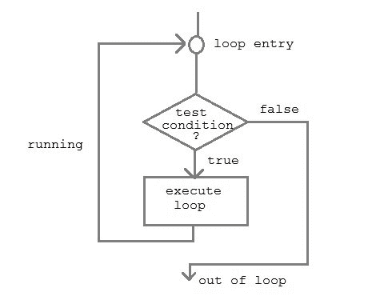

C++ 循环——while，for和do while循环
在任何编程语言中，循环用于重复执行一组语句，直到满足特定条件。
它是如何工作的

执行一系列语句，直到指定条件为真。要执行的语句序列保存在花括号{ }中，称为循环体。每次执行循环体后，检查条件，如果发现为真，则再次执行循环体。当条件检查为假时，不执行循环体。
在 C++ 语言中有 3 种类型循环
- 而循环
- 为回路
- 边做边循环
while循环
而循环可以被称为入口控制循环。它分三步完成。
- 变量初始化。(例如
int x=0;) - 条件(例如
while( x<=10)) - 可变增量或减量(
x++或x--或x=x+2
语法:
variable initialization;
while (condition)
{
statements;
variable increment or decrement;
}
for循环
for循环用于重复执行一组语句，直到满足特定条件。我们可以称之为开环。一般格式是，
for(initialization; condition; increment/decrement)
{
statement-block;
}
在for循环中，我们正好有两个分号，一个在初始化之后，第二个在条件之后。在这个循环中，我们可以有多个初始化或增量/减量，用逗号运算符分隔。对于回路只能有一个条件。
嵌套for循环
我们还可以为循环嵌套，即一个循环位于另一个循环内，用于循环。基本语法是，**
for(initialization; condition; increment/decrement)
{
for(initialization; condition; increment/decrement)
{
statement;
}
}
do...while循环
在某些情况下，有必要在测试条件之前执行循环体。这种情况可以借助 do-while 循环来处理。 do 语句首先评估循环体，最后使用和语句检查条件。 do-while 循环的一般格式是，
do
{
// a couple of statements
}
while(condition);
跳出循环
有时，在执行循环时，一旦某个条件成立，即跳出循环，就必须跳过循环的一部分或离开循环。C 语言允许在一个循环中从一条语句跳到另一条语句，也允许跳出循环。
1) break语句
当在循环中遇到break语句时，循环立即退出，程序继续执行紧接着循环的语句。
2) continue语句
它使控件直接进入测试条件，然后继续循环过程。遇到继续时，光标离开当前循环，并从下一个循环开始。